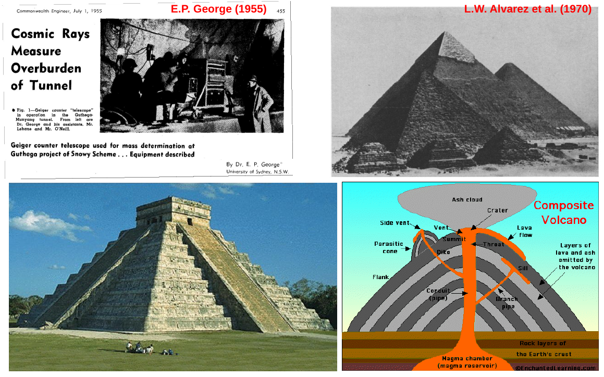
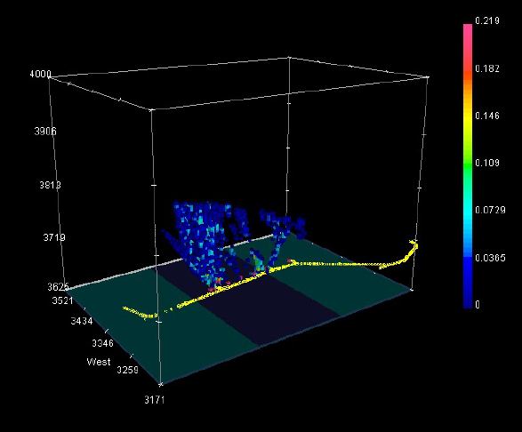

缪子断层成像
Table of Contents
《西游记》第七回，孙悟空的一双眼被太上老君的炼丹炉熏红了，弄做个老害病眼，故唤作 “火眼金睛”。但这双眼睛可不简单，不仅能看出妖精原形，还能够隔板看物，在第 46 回 悟空就凭这个本事狠狠地戏弄了一把车迟国国师。如今，随着科学与技术的发展，这样隔物 看物的“火眼金睛”在现实中已经很普遍了，比如在地铁与机场里，随处都可见到的 X-光 安检系统。今天要说的是一种利用缪子的“火眼金睛”——缪子断层成像。
什么是缪子？
我们目光所及的物质都可以一层层地拆分下去：宏观结构、微观结构、分子结构，直到原子 结构。原子是由原子核与核外电子构成的，而原子核又是由质子与中子构成，质子与中子统 称为核子。核子本身也是有结构的，它们由更基本的粒子构成。
标准模型是现代粒子物理学的核心，它可以用来解释我们这个宇宙是由哪些最基本的粒子构 成的。标准模型告诉我们，这个宇宙的可见物质由两大类基本粒子构成——费米子与玻色子， 费米子是组成物质的基本粒子，而玻色子则负责在在物质之间传递各种相互作用的力。光子 是最常见的玻色子，它传递电磁相互作用；在夸克之间传递强相互作用的是胶子；在夸克、 轻子之间传递弱相互作用的是 W 与 Z 玻色子；而在所有物质之间传递引力相互作用的是希 格斯子，也称引力子。标准模型预言的所有基本粒子目前都已经找到了。费米子主要包括夸 克与轻子，而我们的核子是由六种夸克中的上夸克与下夸克组合而成，围绕原子核旋转的电 子则属于轻子。轻子家族中，电子属于第一代，第二代轻子叫缪子 (muon, 即 μ-子), 第 三代叫陶子 (tauon, 即 τ-子), 电子、缪子和陶子还分别拥有各自对应的中微子。目前还 没有发现任何轻子具有内部结构，轻子与物质之间主要是电磁与弱相互作用。
缪子的基本性质与电子相似，但它的质量约为电子的 200 倍，故可以将它想象成一个加重 的电子。缪子在 1936 年被发现，起初它被称为缪介子。后来的研究发现，它没有强相互作 用，其基本性质属于轻子，而介子是由夸克构成的并具有强相互作用，故称其为缪介子是错 误的1。所以，它现在只有唯一的名称，就是缪子。因缪子与电子性质类似，故可用缪 子取代电子，形成一种类似原子的结构，这种结构称为缪原子。这种奇异的原子结构已经超 出了我们目前的化学元素周期表。比起位于化学元素周期表中的电子原子，缪原子具有更小 的库仑位垒，故可能有一些特殊用途，比如用来产生室温下的冷聚变。
缪子因为质量大，它受磁场的加速与偏转均比电子要慢，也不太容易发出轫致辐射，这使得 它在物质中能比电子穿透得更深。通常的放射性衰变、核裂变，甚至是核聚变都无法产生缪 子。地球上的缪子主要来自宇宙射线。所谓的宇宙射线，指的是太空中的高能粒子流，它的 主要成分是由恒星抛射出来的质子。这些高能质子与外层大气分子发生碰撞，生成了派介子 (pion, 或 pi-meson, π-介子), 然后派介子再衰变成缪子和中微子，产生的缪子几乎以光 速冲向地面，可以穿透很深的地层。四川锦屏山地下实验室是目前世界上最深的地下实验室， 其岩层厚度约 2700 米，在这么深的地下仍然可以探测到来自宇宙射线的缪子。

Figure 1: 宇宙射线缪子的生成示意图
缪子很不稳定，其静止寿命为 2.2 微秒，这个寿命对大多数高能粒子而言已经是“长寿” 了。但是，以光速飞行 2.2 微秒只能运动大约 660 米，而缪子通常在地面万米以上的高空 产生，为什么还能在地下 2 千米处测量到宇宙射线产生的缪子呢？这是因为相对论的钟慢 效应, 2.2 微秒是在缪子自身静止参照系中的时间，当它以接近光速运动时，在地面看来， 它的寿命很长，长到足够穿透数千米深的地层。缪子通常会通过弱相互作用衰变为一个电子、 一个反电子中微子和一个缪子中微子。
什么是断层成像？
在物理学上，任何射线或能量波经物体表面反射或者穿透物体之后被探测到，均可成像。最 常见的就是可见光成像，其它广泛用于成像的还有红外线、电子、超声波、X-光等。随着核 物理与粒子物理学发展，人们对基本粒子的认识越来越透彻，探测技术越来越先进，利用常 见粒子的成像技术也随之成熟，比如中子照相、伽玛照相已经有广泛应用。
断层成像 (tomography) 通常也称为计算机辅助断层成像，完整的英文名称为 Computer Aided Tomography, 通常简写作 CAT 或 CT. CT 需要使用 X-光、超声波、地震波或者 电磁波作为相应的能量波，能量波在物质中会被反射、衰减或吸收，在适当的位置对通过物 质的能量波进行探测，根据能量波的变化再通过软件可以计算出被探测物体的形状或成分等。 能量波可以使用专门的设备产生，比如 X-光机或超声波，也可以利用天然射线，如缪子束。
随着计算机技术的发展，断层成像已经在各个方面得到了充分的应用，比如 X-光片与 CT 已经是非常普遍的医疗诊断工具。
将断层成像的技术应用于地质研究，在英文中该技术叫 geotomography2, 此处译 为“ 地质断层成像 ”，由词根 geo- (代表地理的、地层的) 和 tomography (断层成像) 构成。地质断层成像通常通过分散在地表或地面以下不同位置的发射装置来发射能量波，再 于恰当的位置对能量波进行探测，通过软件技术对地层的结构进行成像。

Figure 2: 德国图宾根大学所做的 GPR 地质断层成像示意图
地质断层成像最常用的手段是地面穿透雷达，即 GPR3 技术。它通过雷达天线向地 面发射高频电磁波 (通常在 40 到 1500 兆赫), 再于另一个位置利用雷达接收器接收反射 的电磁波。缓慢在地表移动发射天线，可以得到连续的地表层成像。 GPR 的探测深度与地 层的情况有关，在干燥的砂砾型地表上，探测深度可接近 8 米，但很少能够超过 10 米。 德国图宾根大学曾利用地面穿透雷达技术尝试进行地质断层成像4，该技术可以对 河谷内的沉积结构与水文特征进行高精度成像，是水文地质研究的利器。
缪子能够穿透千米深的地层，这个距离把地面穿透雷达能够达到的深度甩得很远。如果把缪 子作为穿透射线，则可以研究更深范围的地层，听上去主意不错哦？
缪子探测与缪子成像
缪子穿透物质时会发生电离与放射性过程，其中放射性过程包括轫致辐射、直接产生正负电 子对和光核相互作用。电离是缪子穿透物质的主要能量损失方式。对缪子的探测相对比较容 易，而且由于它没有强相互作用，探测精度很高，本底也很小。
缪子的探测分为两个过程：首先是粒子鉴别，即把缪子与其它粒子区别开来；然后是缪子的 具体参数，比如能量与位置等。由于宇宙射线缪子通常能量很高，很少有粒子象缪子那样能 够穿过大体积的吸收体而只损失很少的能量，可依据这个特点很容易识别缪子。常见的缪子 探测器有闪烁体、气体电离室等。通常闪烁体探测器只作为缪子计数器，即记录有多少个缪 子通过。对缪子详细参数的探测常使用气体电离室探测器，比如漂移管、阴极条状腔室 (CSC: cathode strip chambers) 等，它们可用于测量缪子位置与能量。

Figure 3: 利用缪子断层成像做货厢扫描的原理示意
宇宙射线产生的缪子与阳光一样，是天然的射线源。随着缪子探测技术的成熟，利用这个天 然射线源进行成像也是很自然的选择。缪子成像技术虽然说不上很新，但应用并不广泛，其 中比较有特色的有：
- 1955 年, E.P. George 等人利用缪子成像测量了隧道上的覆盖物，这是缪子成像应用 的最早案例。
- 1970 年, L.W. Alvarez 等人利用缪子测量了位于埃及开罗西南处约 20 公里的吉萨第 二大金字塔卡夫拉，确认了其中并不象其它的金字塔那样存在额外的墓室5。
- 2010 年，日本东京地震研究所发表了利用缪子成像对浅间活火山进行轴向成像的结果， 可以看到火山内部的详细结构6。
- 在德克萨斯大学奥斯汀分校还有一个玛雅缪子研究组7, 他们利用缪子成像来 研究玛雅金字塔遗迹，获得其覆盖层的三维图像。
- 由于缪子与高原子序数的核相互作用明显，它很容易用于识别较重的燃料核素，因此， 将缪子成像技术用在核反应堆上，对运行中的反应堆的内部结构尤其是其中的燃料棒进 行监视，也就顺理成章了。日本8 与美国9 今年分别发表了这方面研 究的论文。

Figure 4: 缪子断层成像的应用实例，分别为（从左到右，从上到下）：测量隧道覆盖物 (1955), 测量埃及金字塔 (1970), 玛雅遗迹研究, 测量火山结构 (2010)
对金字塔、火山进行的成像属于地质断层成像。由于缪子能够穿透很深的地层，利用缪子进 行地质断层成像，即便是很深的地层对于缪子成像探测器来讲，也像半透明的玻璃一样，可 以“看”得很清楚。
缪子地质断层成像在探矿中的应用
由于矿石的密度通常比普通的岩石要大，那么，能否利用缪子地质断层成像获得一个矿区详 细的矿石储量与分布呢？答案是肯定的。但能够对多大范围的矿区进行成像，采用哪种探测 器成本更低廉，哪种分析方法更高效，这些非常具体的技术细节决定了这种技术的实用性。
科学研究一般是利用已知去认识未知。对于缪子地质断层成像应用于矿区勘探，我们已经知 道的是缪子性质、探测方法、可参考的一般成像方法，所未知的是需要哪种探测器、哪种分 析算法，以及采用某种方案最终能够达到什么效果。要知道未知的参数，就需要实施实验来 测量，甚至需要反复的实验来进一步核实并提高精度。
由于核物理与粒子物理的实验设备通常很昂贵，过程很复杂，实验的实施一般都不太容易。 但物理学在定量方面是其它学科难以比拟的，也这使得物理研究可以在实施实验之前进行非 常充分的计算。在计算机没有充分发展以前，通常会利用已知的数据与规律做一些初步计算， 比如利用缪子在物质穿越过程中的能量损失公式来计算所需要的探测器厚度与可能响应等。
计算机技术的进步，不仅让计算速度更快，也改善了物理学研究的实验过程。以赌城蒙特卡 罗所命名的数学方法发展于二十世纪四十年代，它的突出特点是可以将一些过于复杂的计算 简化成符合一定规则的随机过程，从而让一些看似无法解决的计算变得可能，在计算机性能 极大提高的情况下，又使得许多计算可以很高效。现代的核物理与粒子物理研究，在实验之 前通常会利用蒙特卡罗方法对方案进行非常仔细的模拟计算，利用计算机排除一大类不合理 的或无效的方案，挑选出合理的、效率最高的方案。在实施具体的缪子断层成像实验之前， 我们可以把整个实验方案设计编制成计算机程序，利用专门的蒙特卡罗方法仿照真实的情况 对整个实验进行模拟，从而在进行实际的测量之前对其结果有一个准确的估计。
对缪子断层成像探矿的模拟，可预先假设一个地层状态与矿区的分布，将整个假设的情形在 程序中进行描述；然后把地面缪子束流的分布情况作为参数输入到程序中，利用蒙特卡罗方 法模拟这些缪子在地层中的输运过程；再把探测器也放置到模拟程序中，计算它能够探测到 的缪子。这样模拟得到的是对观测数据的预测情形。
在实际成像中，我们需要的是通过观测的数据反推出实际的三维岩层与矿区结构。利用观测 数据的进行反向推导的过程在实验数据分析中也称为反演过程。反演算法可以在模拟程序中 进行验证，但最终还是需要通过实验来检验算法的有效性。
实验方案、探测器测量系统与反演算法构成了缪子断层成像探矿的核心。

Figure 5: 加拿大 AAPS 实验测量所反演出来的矿床结构
加拿大 AAPS 与 TRIUMF 实验室首次将缪子断层成像应用在矿区勘探上10, 他们可 以对数公里范围内几百米深的矿区进行成像。
悟空的“火眼金睛”神妙无比，但科学拥有比神话更神奇的眼睛，在这眼睛下，隔物看物实 在是太小儿科了。物理学上的粒子探测器就是这种神奇的“眼睛”之一，它上天入地，几乎 能够探知到我们周围所有的空间。缪子的断层成像是粒子探测器在研究或民用方向的拓展， 这种“神奇之眼”的效果才刚刚展现，其未来的作用不可估量。
Footnotes:
这是一个新的领域, geotomography 目前还没有恰当的中文译名，本文翻译为 “地质断层成像”尚属首次。
Ground-Penetrating Radar, 参见美国环境保护署 (EPA) 对 Ground-Penetrating Radar 概念的介绍，它属于“无损探测”(NDT: Nondestructive Testing) 技术的一种。
L. Alvarez et al. 1970, Science, 167, 832-839, doi:10.1126/science.167.3919.832
Three-dimensional computational axial tomography scan of a volcano with cosmic ray muon radiography, Hiroyuki K. M. Tanaka, Dec. 2010, doi:10.1029/2010JB007677
Prog. Theor. Exp. Phys. (2013) 073C01, doi:10.1093/ptep/ptt046
J. Appl. Phys. 113, 184909 (2013); doi:10.1063/1.4804660